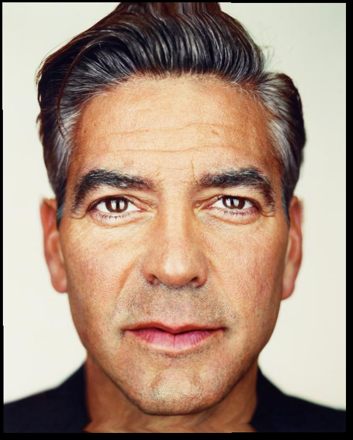
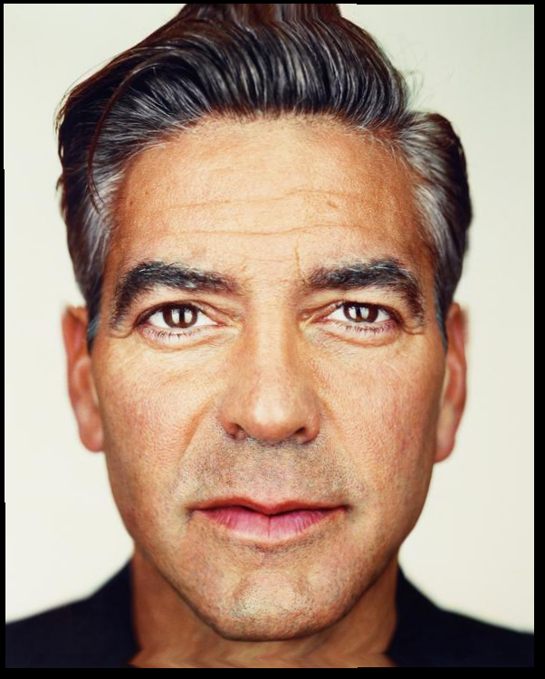
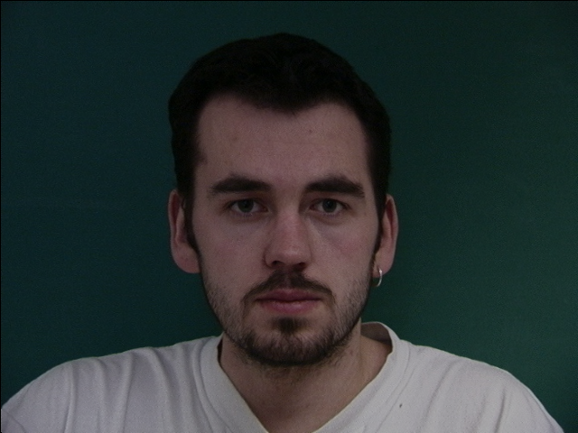
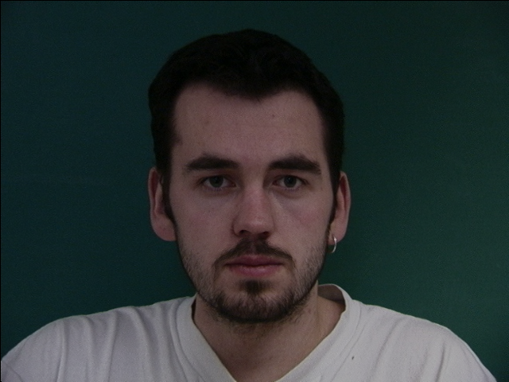
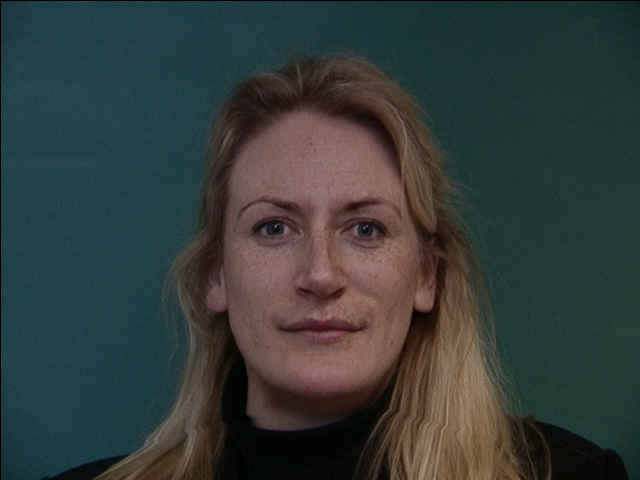
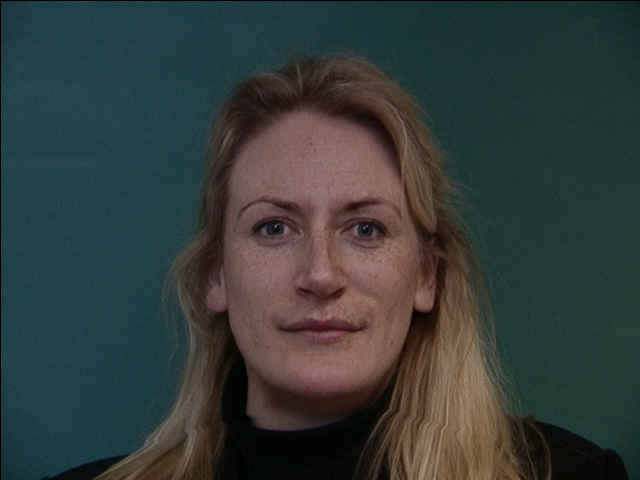

CS180 Project 3: Face Morphing
Josh Barua
Part 1: Defining Correspondences
In part 1, I first identified 45 pairs of (x,y) points between the two images that map to a similar region of the face. Then I computed an average shape by taking the average of every pair of (x,y) points. I then computed the Delaunay triangulation using the 45 2D points in the average shape which I have overlayed onto the original images below for visualization.
Part 2: Computing the "Mid-way Face"
Part 2 requires three steps to compute the mid-way face:
1. Computing the average shape
2. Computing the affine transformation matrix from the source triangle to the target triangle
3. Inverse warping pixels from the original image to the target image
Affine transformation: To compute the affine transformation matrix between two triangles, I defined a function that takes in 12 points (6 from each triangle). Using these points, I set up a system of equations with 6 unknowns and 6 equations (i.e. has a unique solution) as a matrix-vector product. I solved the system of equations using np.linalg.solve().
Inverse Warping: The affine transformation matrix defines how to map a point in the source triangle to the target triangle. If we want to populate the target triangle with pixel values from the source triangle, we can take the inverse of the affine transformation matrix and apply it to each point in the target triangle. One problem with inverse warping is that the location of the source pixel we calculate could be between two pixels -- so I use nearest neighbors interpolation to pick a color value. In practice, I used sk.draw.polygon() to create a triangular mask and scipy.interpolate.RegularGridInterpolator() for interpolation.
Original Image (left), Warped Image (right)
My face became significatly wider and George Clooney's face profile became skinnier.
 

Mid-way Image
Part 3: The Morph Sequence
In part 3, we generalize the mid-way face from part 2 using the parameters warp_func which controls what fraction of the shape to use from each image and dissolve_frac which controls what fraction of color to use from each image. Using a simple for loop ranging from [0,1] I am able to generate 46 intermediate faces and stitch them together to create the gif below.

Part 4: The "Mean face" of a population
In part 4, I used the Danes dataset of faces to compute the mean face of the population and morph between the mean face and my face. To compute the mean face, I computed the average shape across all keypoints in the dataset, morphed each face to the average shape, and cross-dissolved across all the morphed faces (simply averaging across all the faces from the dataset does not work). Below, I have visualized faces in the dataset morphed to the mean face and the mean face itself.
Original Face (left), Morphed to Average (right)
 

 

Mean Face of Danes
Below, I present my face morphed to the geometry of the average face (left), and the average face morphed to the geometry of my face (right). My face becomes a bit wider (since I have a narrower face than the average person) and the average face becomes narrower.
Part 5: Caricatures
In part 5, I created a caricature by extrapolating my facial features from the mean. In particular, let the keypoints selected on my face be a vector s and the keypoints on the average face be a vector t, I calculated s + alpha*(t - s) as the target keypoints. I then warp my face to the target keypoints and visualize the results below.
alpha = 0.5, 1
alpha = 2, 3
Part 6: Bells and Whistles
In part 6, I chose to create a morph sequence between all of my house mates.